คู่มือใช้งานเครื่องมือ · ระดับ Free
ตรวจแอร์แยกส่วน
Split Type AC Calculator
FREE
สำหรับช่างเทคนิคที่เพิ่งเริ่มงาน — อ่านแล้วทำตามได้เอง
ใช้เวลาฝึกประมาณ 60 นาที
เคสตัวอย่าง: โรงงาน A แอร์ห้องประชุม 18,000 BTU/h Inverter R32
อ.หนึ่ง กลับทวี / Aj. Nueng Klubtavee
tripleeenergytools.com
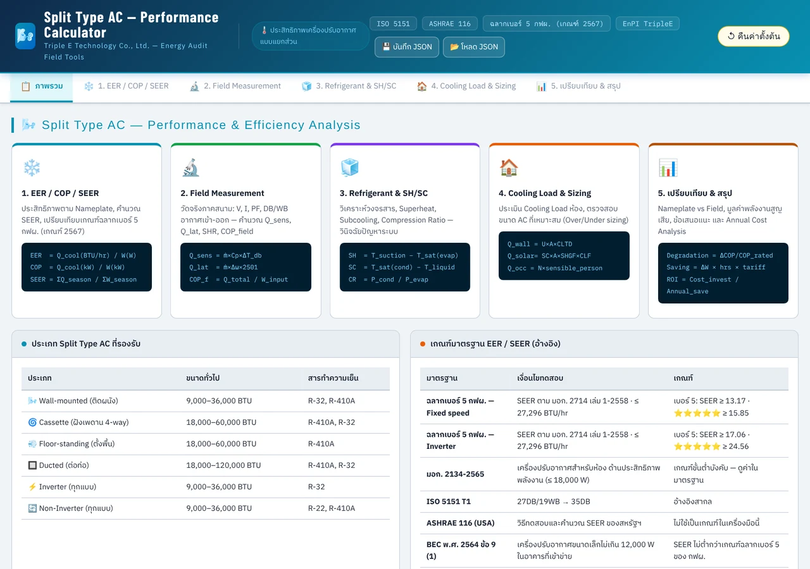
หน้าจอเครื่องมือ — เปิดได้จากเมนู Free ของเว็บไซต์
รุ่นเครื่องมือ: Free commit e266794 · จับภาพ 25 พ.ย. 2569 · คู่มือ Rev01
เครื่องมือนี้ตอบคำถามอะไร
คู่มือใช้งาน · เครื่องปรับอากาศแบบแยกส่วน (Split Type AC Performance Calculator) · ระดับ Free
2 / 31
| คำถามหน้างาน | ใช้แท็บไหน | เคสโรงงาน A ได้ |
|---|---|---|
| แอร์เครื่องนี้ประสิทธิภาพตามป้ายเท่าไร ได้ฉลากระดับไหน | 1. EER / COP / SEER | EER 12.41 · เบอร์ 5 ★ |
| ตอนนี้ทำความเย็นได้จริงกี่ BTU/h กินไฟกี่วัตต์ | 2. Field Measurement | 21,623 BTU/h · 1,646 W |
| ประสิทธิภาพตกจากป้ายไปแค่ไหน | 2 และ 5 | COP 3.638 → 3.851 |
| น้ำยาขาดหรือเกินไหม คอมเพรสเซอร์ทำงานหนักไหม | 3. Refrigerant & SH/SC | SH 7.0 °C · SC 6.0 °C |
| ห้องนี้ต้องใช้แอร์กี่ BTU เครื่องที่ติดอยู่พอไหม | 4. Cooling Load & Sizing | 19,037 BTU/h |
| สรุปแล้วต้องทำอะไร เสียค่าไฟปีละเท่าไร | 5. เปรียบเทียบ & สรุป | 19,254 บาท/ปี |
💡 เคล็ดลับ
ทำแท็บ 1 → 2 → 3 → 4 ให้ครบก่อน แล้วแท็บ 5 จะสรุปให้เองโดยไม่ต้องกรอกอะไรเพิ่ม
แผนที่หน้าจอ
คู่มือใช้งาน · เครื่องปรับอากาศแบบแยกส่วน (Split Type AC Performance Calculator) · ระดับ Free
3 / 31
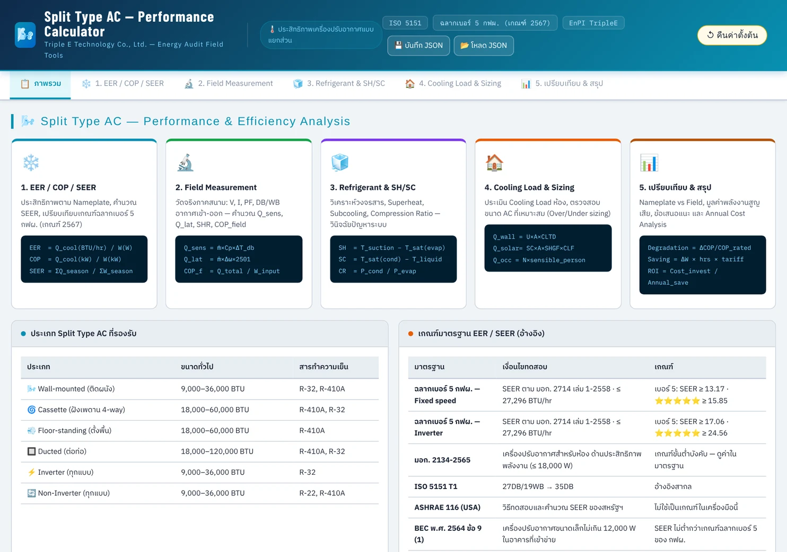
1
2
3
4
5
6
1
บันทึก JSON · โหลด JSON — เก็บและเปิดงานเดิม
2
คืนค่าตั้งต้น — ล้างทุกช่องกลับเป็นตัวอย่าง
3
แท็บ 6 แท็บ: ภาพรวม + แท็บทำงาน 5 แท็บ เรียงตามลำดับงาน
4
การ์ดสรุปว่าแต่ละแท็บทำอะไร ใช้สูตรอะไร
5
ประเภทแอร์แยกส่วนที่เครื่องมือรองรับ
6
เกณฑ์อ้างอิงที่เครื่องมือใช้ตัดสิน
💡 เคล็ดลับ
ทุกแท็บจัดเหมือนกัน: ซ้าย = ช่องกรอก · ขวา = ผลลัพธ์ — กรอกจากบนลงล่างแล้วกดปุ่มสี
เปิดบนมือถือ สลับภาษา และป้ายสีข้างชื่อช่อง
คู่มือใช้งาน · เครื่องปรับอากาศแบบแยกส่วน (Split Type AC Performance Calculator) · ระดับ Free
4 / 31
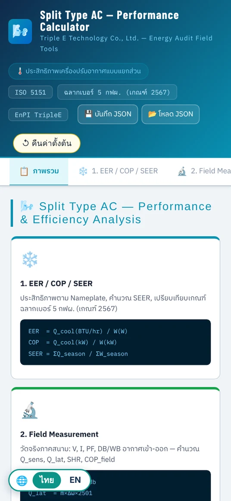
ใช้บนมือถือหน้างานได้ — หน้าจอเรียงเป็นคอลัมน์เดียว ผลลัพธ์อยู่ใต้ช่องกรอก
ปุ่ม 🌐 ไทย | EN ลอยอยู่ด้านล่าง กดสลับภาษาได้ ค่าที่กรอกไว้ไม่หาย
ป้าย ออกแบบ = อ่านจากป้ายเครื่อง/แคตตาล็อก · วัดจริง = ต้องวัดหน้างาน · ตั้งค่า = สมมติฐานที่เลือกเอง · คำนวณ = เครื่องมือเติมให้
ใต้ทุกช่องมีคำอธิบายสีเทา บอกเครื่องมือวัดและช่วงค่าปกติ
💡 เคล็ดลับ
จดค่าลงแบบฟอร์ม (สไลด์ 6) ที่หน้างานก่อน แล้วค่อยกรอก จะผิดน้อยกว่า
คำศัพท์ 6 คำที่ต้องรู้ก่อนเริ่ม
คู่มือใช้งาน · เครื่องปรับอากาศแบบแยกส่วน (Split Type AC Performance Calculator) · ระดับ Free
5 / 31
| คำ | ความหมายแบบสั้น | จำง่าย ๆ |
|---|---|---|
| BTU/h | ขนาดทำความเย็นของแอร์ — 12,000 BTU/h = 1 ตันความเย็น = 3.517 kW | แอร์ "หมื่นแปด" = 18,000 BTU/h |
| EER | ความเย็นที่ได้ (BTU/h) ÷ ไฟที่ใช้ (W) | ยิ่งสูงยิ่งประหยัด |
| COP | ความเย็น (kW) ÷ ไฟ (kW) = EER ÷ 3.412 | ตัวเลขเดียวกับ EER คนละหน่วย |
| SEER | ประสิทธิภาพเฉลี่ยทั้งฤดู — ใช้ตัดสินฉลากเบอร์ 5 | อ่านจากฉลากเครื่อง |
| DB / WB | DB = อุณหภูมิกระเปาะแห้ง (เทอร์โมมิเตอร์ปกติ) · WB = กระเปาะเปียก (บอกความชื้น) | ต้องวัดทั้งคู่ |
| SH / SC | Superheat / Subcooling — ตัวบอกว่าน้ำยาในระบบพอดีหรือไม่ | ช่างแอร์ใช้เกจวัดน้ำยาหา |
💡 เคล็ดลับ
ป้ายสถานะที่มีคำว่า "ค่าแนวทางของเครื่องมือ" เป็นแนวทางเบื้องต้น ไม่ใช่เกณฑ์ผ่าน/ตกตามมาตรฐาน
เตรียมข้อมูลก่อนลงหน้างาน (แบบฟอร์มจดค่า)
คู่มือใช้งาน · เครื่องปรับอากาศแบบแยกส่วน (Split Type AC Performance Calculator) · ระดับ Free
6 / 31
| แท็บ | ข้อมูลที่ต้องจด | เครื่องมือวัด / แหล่งข้อมูล | ค่าโรงงาน A |
|---|---|---|---|
| 1 | ป้ายเครื่อง: BTU/h · วัตต์ · EER · สารทำความเย็น · SEER บนฉลาก | ถ่ายรูปป้ายคอยล์ร้อน + ฉลากเบอร์ 5 | 18,000 · 1,450 W · 12.41 · R32 · 19.0 |
| 2 | แรงดัน · กระแส · Power factor (หรือวัตต์จาก power meter) | Clamp meter / power meter | 220 V · 8.5 A · 0.88 |
| 2 | ลมกลับ: DB / WB | เทอร์โม-ไฮโกรมิเตอร์ที่หน้ากากลมกลับ | 27.0 / 19.5 °C |
| 2 | ลมจ่าย: DB / WB | เทอร์โม-ไฮโกรมิเตอร์ที่ช่องลมจ่าย | 13.5 / 12.8 °C |
| 2 | ปริมาณลม (CFM) · อุณหภูมินอกอาคาร | เครื่องวัดความเร็วลม × พื้นที่ช่องลม | 600 CFM · 35 °C |
| 3 | อุณหภูมิอิ่มตัวด้านต่ำ/สูง · ท่อดูด · ท่อน้ำยาเหลว · ท่อจ่าย | เกจวัดน้ำยา + เทอร์โมมิเตอร์แบบหนีบท่อ | 7 / 46 · 14 · 40 · 88 °C |
| 4 | ขนาดห้อง · กระจก · จำนวนคน · ไฟ · อุปกรณ์ | ตลับเมตร · นับจริง | 5 × 5 × 2.7 m · กระจก 4 m² · 4 คน |
⚠️ ระวัง
การวัดกระแสในตู้ไฟและการต่อเกจวัดน้ำยา ให้ช่างไฟฟ้า/ช่างแอร์ผู้รับผิดชอบเป็นคนทำ — ผู้ฝึกจดค่าและกรอกเครื่องมือ
ขั้นที่ 1
แท็บ 1: กรอกข้อมูลจากป้ายเครื่อง
คู่มือใช้งาน · เครื่องปรับอากาศแบบแยกส่วน (Split Type AC Performance Calculator) · ระดับ Free
7 / 31
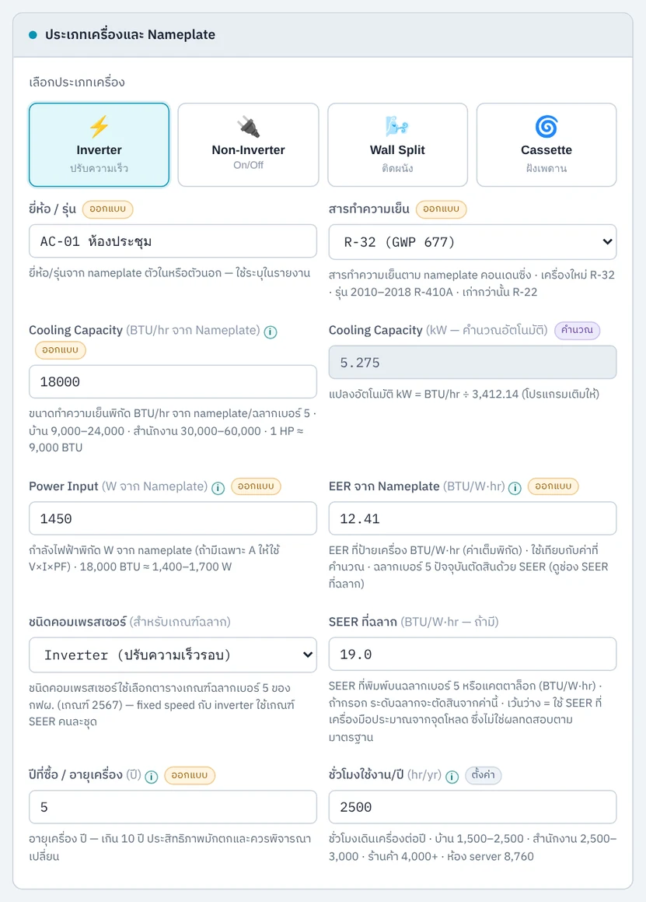
1
2
3
4
5
6
7
8
9
10
1
เลือกชนิดเครื่อง: Inverter / Non-Inverter / ติดผนัง / ฝังเพดาน
2
ชื่อหรือรุ่นเครื่อง — ไว้จำว่าเครื่องไหน
3
สารทำความเย็นตามป้าย (R32 / R410A / R22)
4
ขนาดทำความเย็น (BTU/h) จากป้าย
5
กำลังไฟฟ้า (W) จากป้าย
6
EER บนป้าย — ไว้เทียบกับที่เครื่องมือคำนวณ
7
ชนิดคอมเพรสเซอร์ — ใช้เลือกแถวเกณฑ์ฉลาก
8
SEER บนฉลากเบอร์ 5 — ไม่กรอก เครื่องมือจะไม่ตัดสินระดับฉลาก
9
อายุเครื่อง (ปี)
10
ชั่วโมงใช้งานต่อปี — ใช้คิดค่าไฟ
ช่อง kW ทำความเย็น เครื่องมือแปลงจาก BTU/h ให้เอง ไม่ต้องกรอก
ขั้นที่ 2
ค่าประมาณ SEER และกดคำนวณ
คู่มือใช้งาน · เครื่องปรับอากาศแบบแยกส่วน (Split Type AC Performance Calculator) · ระดับ Free
8 / 31
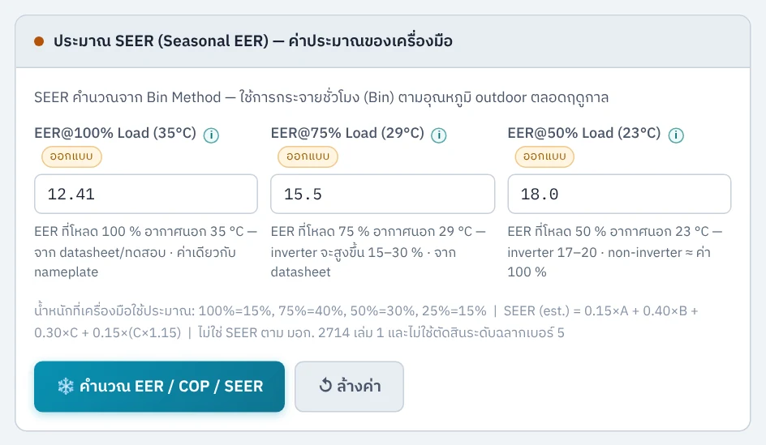
1
2
3
4
1
EER ที่โหลดเต็ม (อากาศนอก 35 °C) — ค่าเดียวกับป้าย
2
EER ที่โหลด 75 % — จากแคตตาล็อก ถ้าไม่มีใช้ค่าตั้งต้น
3
EER ที่โหลด 50 % — จากแคตตาล็อก ถ้าไม่มีใช้ค่าตั้งต้น
4
กด คำนวณ EER / COP / SEER
ส่วนนี้ให้ SEER (est.) ซึ่งเป็นค่าประมาณของเครื่องมือ — ใช้ดูแนวโน้มเท่านั้น
ระดับฉลากเบอร์ 5 ตัดสินจาก SEER ที่ฉลาก (ช่อง ⑧ ในขั้นที่ 1) เท่านั้น
ไม่มีข้อมูลโหลดบางส่วน: ปล่อยค่าตั้งต้นไว้ได้ ไม่กระทบ EER และ COP
อ่านผลแท็บ 1
คู่มือใช้งาน · เครื่องปรับอากาศแบบแยกส่วน (Split Type AC Performance Calculator) · ระดับ Free
9 / 31
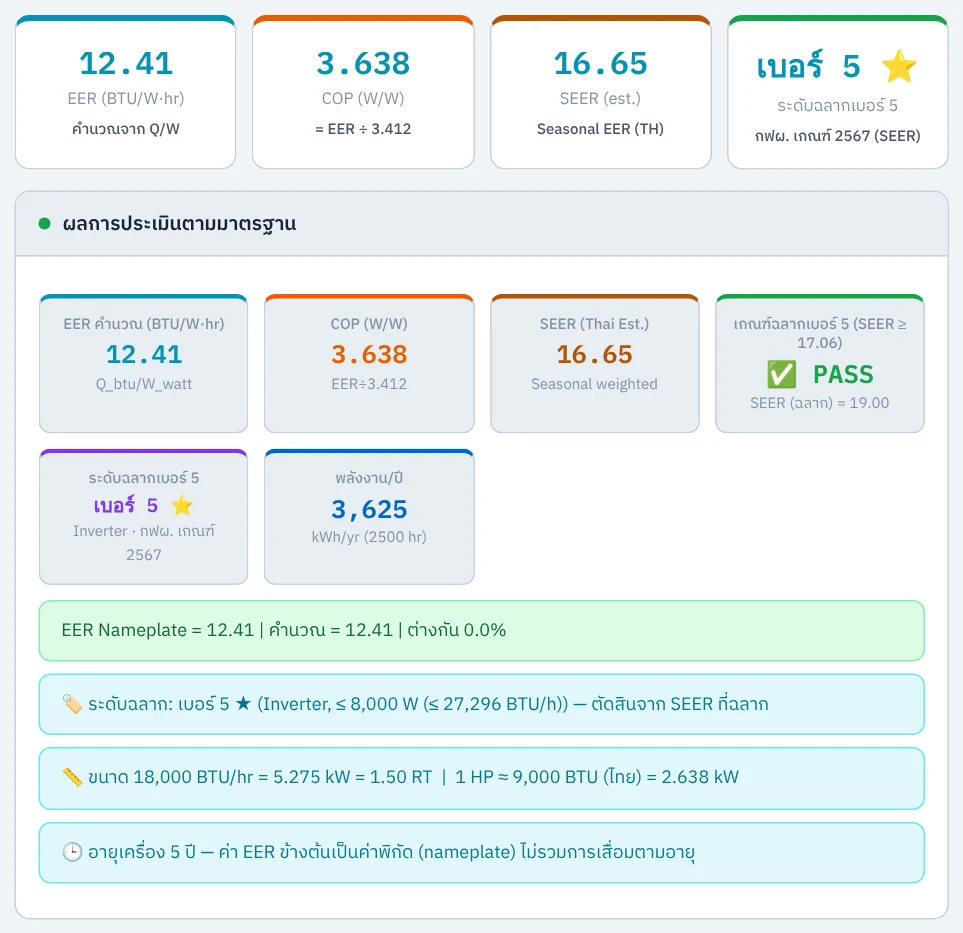
1
2
3
4
5
1
EER = 12.41 = 18,000 ÷ 1,450 — ต่างจากป้าย 0.0 % แปลว่ากรอกถูก
2
COP = 3.638 — ไฟ 1 kW ทำความเย็นได้ 3.638 kW
3
SEER (est.) 16.65 — ค่าประมาณ ไม่ใช้ตัดสินฉลาก
4
ระดับฉลาก เบอร์ 5 ★ — จาก SEER ที่ฉลาก
5
รายละเอียด: เกณฑ์เบอร์ 5 ✅ PASS · ใช้ไฟ 3,625 kWh/ปี · ขนาด 5.275 kW = 1.50 ตันความเย็น
ถ้า EER ที่คำนวณต่างจากป้ายเกิน 2–3 %: ตรวจว่ากรอก BTU/h กับวัตต์จากป้ายเดียวกัน (โหมดทำความเย็น)
ค่าในแท็บนี้เป็นค่าพิกัดตอนเครื่องใหม่ — ของจริงวันนี้ต้องวัดในแท็บ 2
ตารางเกณฑ์ฉลากประหยัดไฟเบอร์ 5
คู่มือใช้งาน · เครื่องปรับอากาศแบบแยกส่วน (Split Type AC Performance Calculator) · ระดับ Free
10 / 31
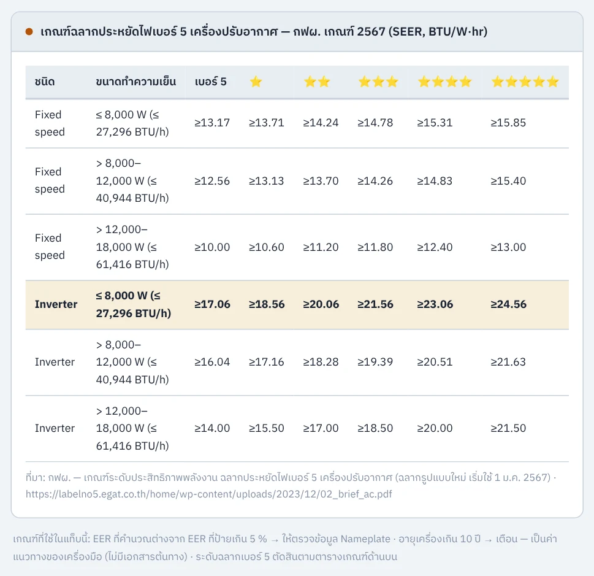
1
1
บรรทัดเกณฑ์ที่ใช้ในแท็บนี้ (ท้ายแท็บ 1): EER ต่างจากป้ายเกิน 5 % · อายุเกิน 10 ปี = ค่าแนวทางของเครื่องมือ · ระดับฉลากตัดสินตามตารางนี้
แถวที่ระบายสี = แถวที่ตรงกับเครื่องที่กรอก (ชนิดคอมเพรสเซอร์ + ขนาด)
อ่านจากซ้ายไปขวา: เบอร์ 5 → ★ → ★★ … ยิ่งดาวมาก SEER ขั้นต่ำยิ่งสูง
โรงงาน A: Inverter ไม่เกิน 8,000 W · SEER ที่ฉลาก 19.0 → เบอร์ 5 ★
เกณฑ์ของ Inverter กับ Fixed speed คนละแถว — เลือกชนิดคอมเพรสเซอร์ผิด ผลตัดสินผิด
💡 เคล็ดลับ
ที่มาของเกณฑ์อยู่ใต้ตารางในเครื่องมือ — ใช้อ้างอิงในรายงานได้
ขั้นที่ 3
แท็บ 2: วัดไฟฟ้า
คู่มือใช้งาน · เครื่องปรับอากาศแบบแยกส่วน (Split Type AC Performance Calculator) · ระดับ Free
11 / 31
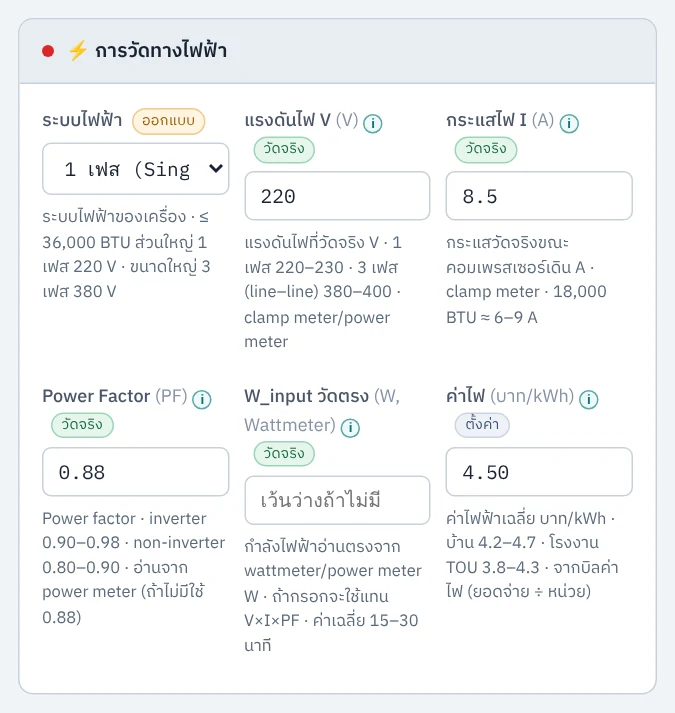
1
2
3
4
5
6
1
ระบบไฟ: 1 เฟส หรือ 3 เฟส
2
แรงดัน (V) ที่วัดได้
3
กระแส (A) จาก clamp meter ที่สายเข้าคอยล์ร้อน
4
Power factor — ไม่มีเครื่องวัดใช้ค่าตั้งต้น
5
มี power meter อ่านวัตต์ได้ตรง ๆ กรอกช่องนี้แทน จะแม่นกว่า
6
ค่าไฟฟ้า (บาท/kWh) จากบิล
วัดตอนคอมเพรสเซอร์ทำงานต่อเนื่องแล้ว 10–15 นาที — ตอนเพิ่งเปิดเครื่องค่ายังไม่นิ่ง
แอร์ Inverter กระแสเปลี่ยนตามโหลด — จดค่าพร้อมกับตอนวัดอุณหภูมิลม
ขั้นที่ 4
วัดลมที่คอยล์เย็น
คู่มือใช้งาน · เครื่องปรับอากาศแบบแยกส่วน (Split Type AC Performance Calculator) · ระดับ Free
12 / 31
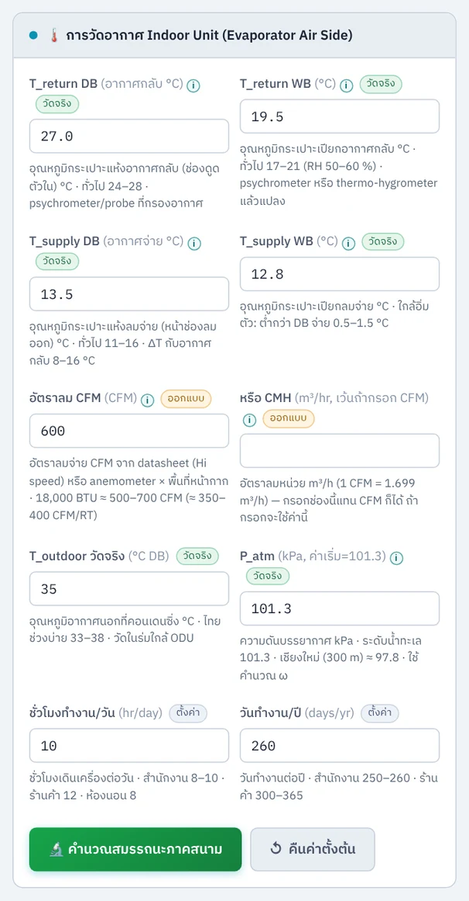
1
2
3
4
5
6
7
8
9
1
ลมกลับ กระเปาะแห้ง (°C)
2
ลมกลับ กระเปาะเปียก (°C)
3
ลมจ่าย กระเปาะแห้ง (°C)
4
ลมจ่าย กระเปาะเปียก (°C)
5
ปริมาณลม (CFM) — ค่าที่คลาดเคลื่อนง่ายที่สุด
6
หรือกรอกเป็น m³/h แทน
7
อุณหภูมินอกอาคารตอนวัด (°C)
8
ชั่วโมงใช้งานต่อวัน และวันต่อปี
9
กด คำนวณสมรรถนะภาคสนาม
ปริมาณลม = ความเร็วลมเฉลี่ย × พื้นที่ช่องลม — วัดความเร็วหลายจุดทั่วช่องแล้วเฉลี่ย
อ่านผลแท็บ 2: เครื่องทำงานจริงได้เท่าไร
คู่มือใช้งาน · เครื่องปรับอากาศแบบแยกส่วน (Split Type AC Performance Calculator) · ระดับ Free
13 / 31
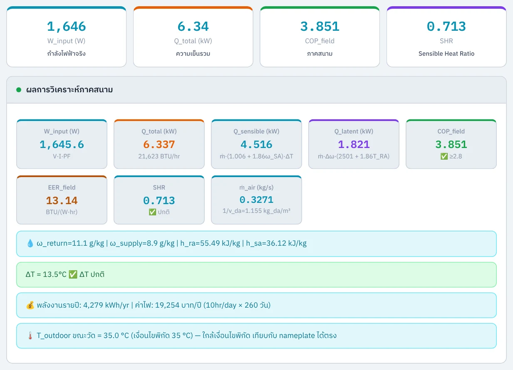
1
2
3
4
5
1
กำลังไฟฟ้าจริง 1,646 W = 220 × 8.5 × 0.88
2
ความเย็นรวม 6.34 kW = 21,623 BTU/h
3
COP ภาคสนาม 3.851 → ✅ ≥2.8 · EER 13.14
4
SHR 0.713 → ✅ ปกติ — สัดส่วนความเย็นที่ใช้ลดอุณหภูมิ ที่เหลือใช้ดึงความชื้น
5
รายละเอียด: ลมกลับ − ลมจ่าย = 13.5 °C → ✅ ΔT ปกติ · ค่าไฟ 19,254 บาท/ปี
ความเย็นสัมผัส 4.516 kW + ความเย็นแฝง (ดึงความชื้น) 1.821 kW = 6.34 kW
ความชื้นในลม: กลับ 11.1 → จ่าย 8.9 g/kg — ส่วนต่างคือน้ำที่ไหลออกทางท่อน้ำทิ้ง
เกณฑ์ของแท็บนี้อยู่ท้ายแท็บ: COP ≥ 2.8 · SHR 0.65–0.92 · ΔT 8–16 °C — ค่าแนวทางของเครื่องมือ ใช้คัดกรอง ไม่ใช่ผ่าน/ไม่ผ่านตามมาตรฐาน
💡 เคล็ดลับ
ข้อความล่างสุดบอกว่าอุณหภูมินอกอาคารตอนวัด ใกล้เงื่อนไขพิกัด 35 °C หรือไม่ — ถ้าห่างมาก เทียบกับป้ายตรง ๆ ไม่ได้
อ่านแผนภูมิไซโครเมตริก
คู่มือใช้งาน · เครื่องปรับอากาศแบบแยกส่วน (Split Type AC Performance Calculator) · ระดับ Free
14 / 31
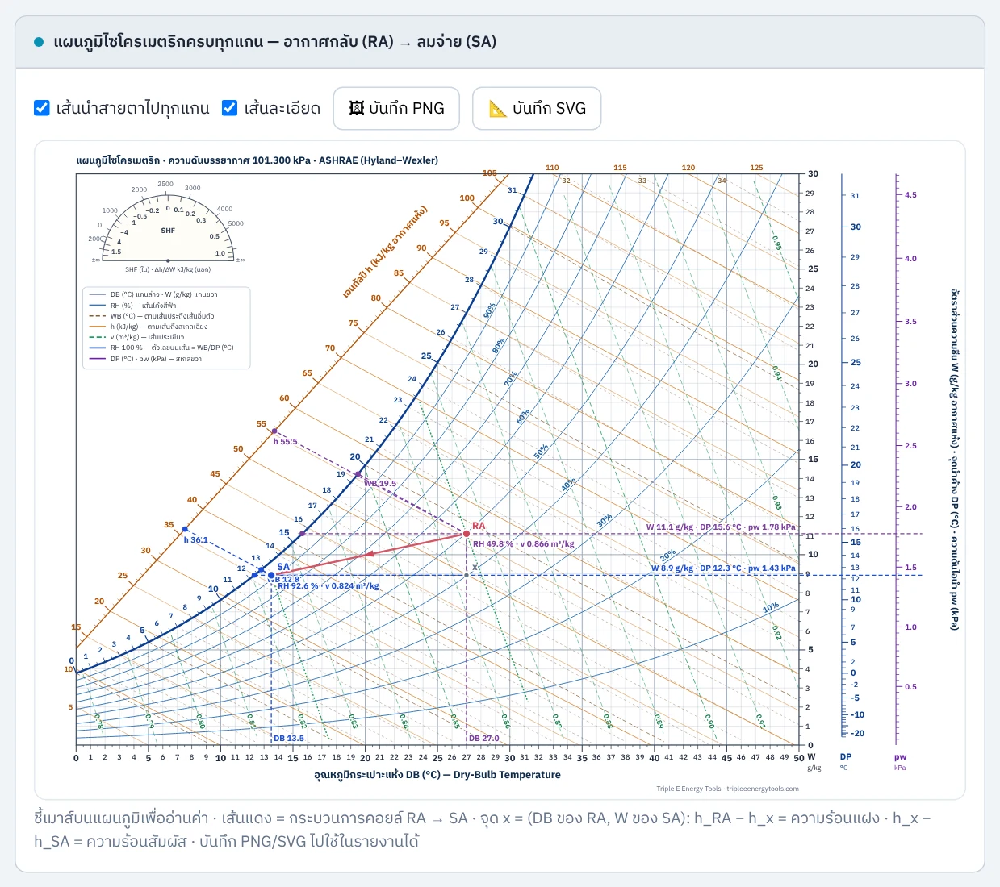
1
2
3
1
ติ๊กเปิด/ปิดเส้นตารางและเส้นประกอบ
2
บันทึกแผนภูมิเป็นรูป PNG หรือ SVG ใส่รายงาน
3
จุด RA = ลมกลับ · จุด SA = ลมจ่าย · เส้นแดง = สิ่งที่คอยล์เย็นทำกับอากาศ
เส้นจาก RA ไป SA ชี้ลงซ้าย: ซ้าย = อุณหภูมิลด · ลง = ความชื้นลด
เส้นเกือบแนวนอน = แทบไม่ดึงความชื้น (SHR สูง) · เส้นชัน = ดึงความชื้นมาก
แกนนอน = อุณหภูมิกระเปาะแห้ง · แกนตั้งขวา = ปริมาณไอน้ำในอากาศ (g/kg)
ลองเปลี่ยนค่า (What-if): อาการไหนทำให้ประสิทธิภาพตก
คู่มือใช้งาน · เครื่องปรับอากาศแบบแยกส่วน (Split Type AC Performance Calculator) · ระดับ Free
15 / 31
| กรณี | ความเย็น (BTU/h) | ไฟ (W) | COP | ผลในแท็บ 5 |
|---|---|---|---|---|
| โรงงาน A (ปกติ) | 21,623 | 1,646 | 3.851 | ✅ ยังอยู่ในเกณฑ์ดี |
| แผ่นกรองตัน: ลมเหลือ 450 CFM | 16,217 | 1,646 | 2.888 | ❌ ลดมาก — ต้องบำรุงรักษา |
| คอยล์ร้อนสกปรก: กระแสขึ้นเป็น 10.5 A | 21,623 | 2,033 | 3.117 | ⚠️ ลดพอสมควร — แนะนำ Maintenance |
| ลมไม่เย็น: ลมจ่าย 17.0 / 15.0 °C | 15,089 | 1,646 | 2.687 | ❌ ลดมาก — ต้องบำรุงรักษา |
ทำเอง: แก้ค่า → กด คำนวณสมรรถนะภาคสนาม → ดูแท็บ 5 → แก้กลับเป็นค่าเดิม
ลมน้อยลง 25 % ความเย็นหายตามเกือบเท่ากัน — ล้างแผ่นกรองคือมาตรการที่ถูกและได้ผลเร็วที่สุด
กินไฟเพิ่มโดยความเย็นเท่าเดิม ให้นึกถึงคอยล์ร้อน: สกปรก ลมร้อนวนกลับ หรือโดนแดด
ขั้นที่ 5
แท็บ 3: จุดทำงานของวงจรน้ำยา
คู่มือใช้งาน · เครื่องปรับอากาศแบบแยกส่วน (Split Type AC Performance Calculator) · ระดับ Free
16 / 31
1
2
3
4
5
6
7
8
1
สารทำความเย็น — ต้องตรงกับป้ายเครื่อง
2
อุณหภูมิอิ่มตัวด้านต่ำ (°C) — อ่านจากสเกลอุณหภูมิบนเกจด้านต่ำ
3
อุณหภูมิอิ่มตัวด้านสูง (°C) — อ่านจากเกจด้านสูง
4
อุณหภูมิท่อดูด ใกล้คอมเพรสเซอร์ (°C)
5
อุณหภูมิท่อน้ำยาเหลว ก่อนอุปกรณ์ลดความดัน (°C)
6
อุณหภูมิท่อจ่ายออกจากคอมเพรสเซอร์ (°C)
7
มีแต่ค่าความดันจากเกจ (bar g) กรอกช่องนี้แทนได้
8
กด วิเคราะห์วงจรสาร
Superheat = ④ − ② · Subcooling = ③ − ⑤ — เครื่องมือลบให้เอง
วัดอุณหภูมิท่อด้วยเทอร์โมมิเตอร์แบบหนีบ แล้วพันฉนวนทับหัววัด ไม่อย่างนั้นค่าจะเพี้ยนตามอากาศรอบท่อ
อ่านผลแท็บ 3 และแผนภาพ P-h
คู่มือใช้งาน · เครื่องปรับอากาศแบบแยกส่วน (Split Type AC Performance Calculator) · ระดับ Free
17 / 31
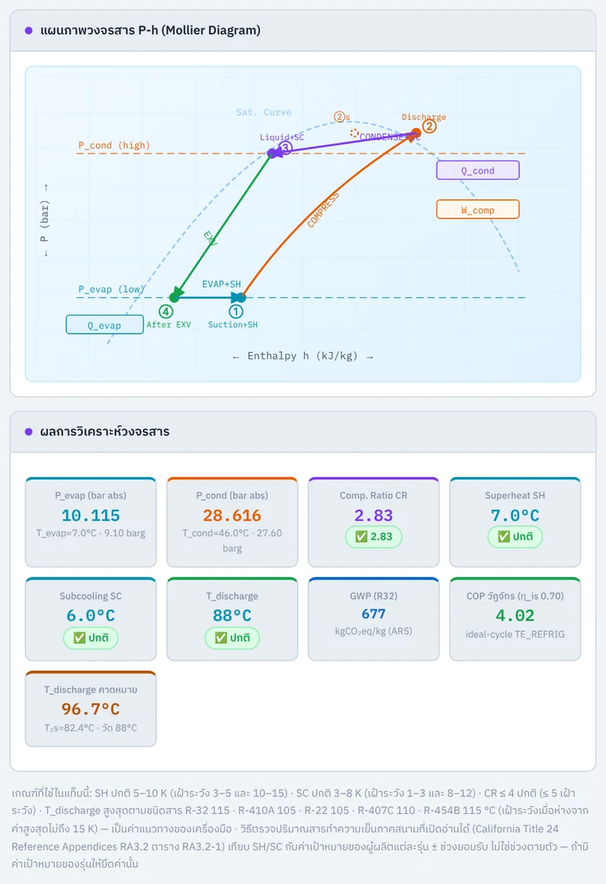
1
2
3
1
แผนภาพ P-h: วงจร 4 ช่วง — อัด → ควบแน่น → ลดความดัน → ระเหย
2
Superheat 7.0 °C ✅ ปกติ · Subcooling 6.0 °C ✅ ปกติ · อัตราส่วนความดัน 2.83
3
บรรทัดเกณฑ์: SH ปกติ 5–10 K · SC 3–8 K · CR ≤ 4 = ค่าแนวทางของเครื่องมือ — มีค่าเป้าหมาย SH/SC ของรุ่นเครื่อง ให้ยึดค่านั้น
ความดันระเหย 9.10 bar g · ความดันควบแน่น 27.60 bar g — เทียบกับเกจที่หน้างานได้
อุณหภูมิท่อจ่ายที่วัด 88 °C เทียบค่าคาดหมาย 96.7 °C — ถ้าวัดได้สูงกว่าค่าคาดหมายมาก ให้สงสัยคอมเพรสเซอร์ร้อนเกิน
COP วัฏจักร 4.02 เป็นค่าทางทฤษฎี ไม่รวมพัดลมและการสูญเสียอื่น — ใช้เทียบแนวโน้ม ไม่ใช่ค่าที่วัดได้
ตารางค่าปกติ และลองเปลี่ยนค่า
คู่มือใช้งาน · เครื่องปรับอากาศแบบแยกส่วน (Split Type AC Performance Calculator) · ระดับ Free
18 / 31
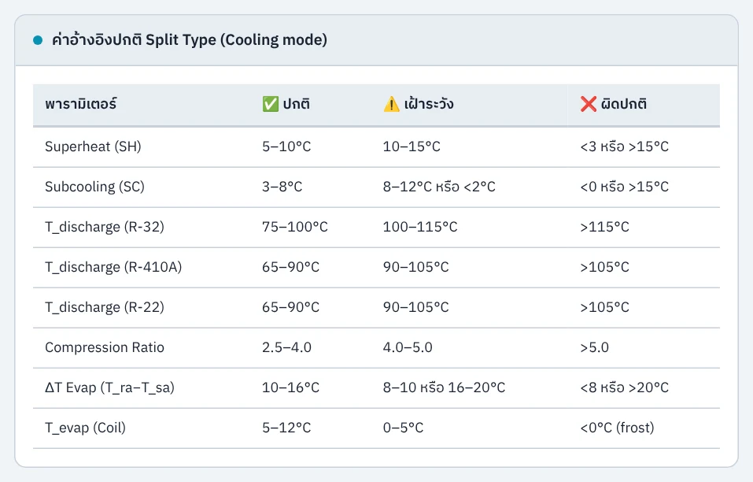
ตารางในเครื่องมือบอกช่วง ปกติ / เฝ้าระวัง / ผิดปกติ ของแต่ละค่า (ค่าแนวทางของเครื่องมือ)
ลองเปลี่ยน ท่อดูดร้อนขึ้นเป็น 22 °C: Superheat 15.0 °C → ⚠️ สูง — น้ำยาน้อยหรืออุปกรณ์ลดความดันตัน · ท่อจ่ายคาดว่าร้อนถึง 106.9 °C
ลองเปลี่ยน ท่อน้ำยาเหลวเป็น 45 °C: Subcooling 1.0 °C → ⚠️ น้อย — แท็บ 5 จะเตือนให้ตรวจปริมาณน้ำยา
อ่าน SH กับ SC คู่กันเสมอ: SH สูง + SC ต่ำ = น้ำยาขาด · SH ต่ำ + SC สูง = น้ำยาเกิน
⚠️ ระวัง
การเติมหรือถ่ายน้ำยาต้องทำโดยช่างที่ผ่านการอบรม — R32 ติดไฟได้ ห้ามมีประกายไฟใกล้จุดทำงาน
ขั้นที่ 6
แท็บ 4: ข้อมูลห้อง
คู่มือใช้งาน · เครื่องปรับอากาศแบบแยกส่วน (Split Type AC Performance Calculator) · ระดับ Free
19 / 31
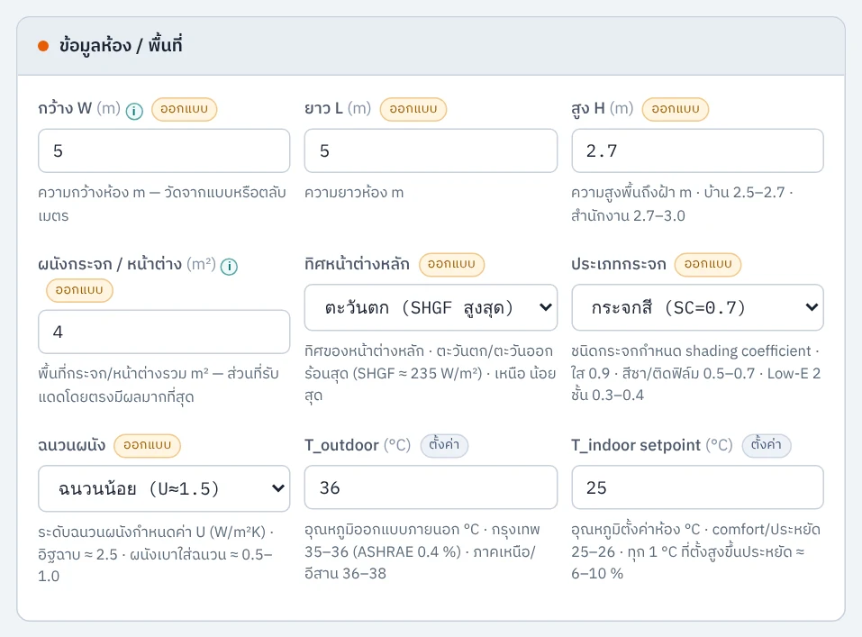
1
2
3
4
5
6
7
8
1
กว้าง × ยาว (m)
2
ความสูงฝ้า (m)
3
พื้นที่กระจกที่โดนแดด (m²)
4
ทิศของกระจก — ตะวันตกร้อนสุด
5
ชนิดกระจก/การบังแดด — มีฟิล์มหรือม่านเลือกค่าที่ต่ำลง
6
ชนิดผนัง — มีฉนวนหรือไม่
7
อุณหภูมินอกอาคารที่ใช้ออกแบบ (°C)
8
อุณหภูมิห้องที่ต้องการ (°C)
วัดห้องด้วยตลับเมตรหรือเลเซอร์วัดระยะ — ประมาณด้วยสายตาคลาดเคลื่อนได้ 20–30 %
ขั้นที่ 7
ความร้อนจากคนและอุปกรณ์
คู่มือใช้งาน · เครื่องปรับอากาศแบบแยกส่วน (Split Type AC Performance Calculator) · ระดับ Free
20 / 31
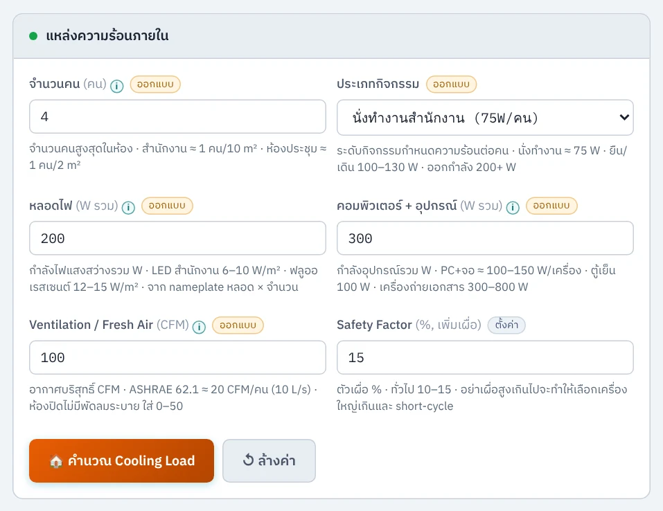
1
2
3
4
5
6
7
1
จำนวนคนในห้องช่วงที่ใช้งานมากที่สุด
2
ลักษณะกิจกรรม — นั่งทำงาน / เดิน / ใช้แรง
3
กำลังไฟแสงสว่างรวม (W)
4
กำลังไฟอุปกรณ์รวม (W) — คอมพิวเตอร์ ตู้เย็น เครื่องถ่ายเอกสาร
5
อากาศบริสุทธิ์ที่เติมเข้าห้อง (CFM)
6
ค่าเผื่อ (%) — ทั่วไป 10–15
7
กด คำนวณ Cooling Load
อุปกรณ์: ใช้วัตต์ที่ใช้จริง ไม่ใช่วัตต์สูงสุดบนป้ายของทุกเครื่องรวมกัน
ห้องที่ไม่มีพัดลมเติมอากาศ: ยังมีอากาศรั่วเข้าทางประตู — ใส่ค่าน้อย ๆ ไม่ใช่ 0
อ่านผลแท็บ 4: ห้องนี้ต้องใช้แอร์กี่ BTU
คู่มือใช้งาน · เครื่องปรับอากาศแบบแยกส่วน (Split Type AC Performance Calculator) · ระดับ Free
21 / 31
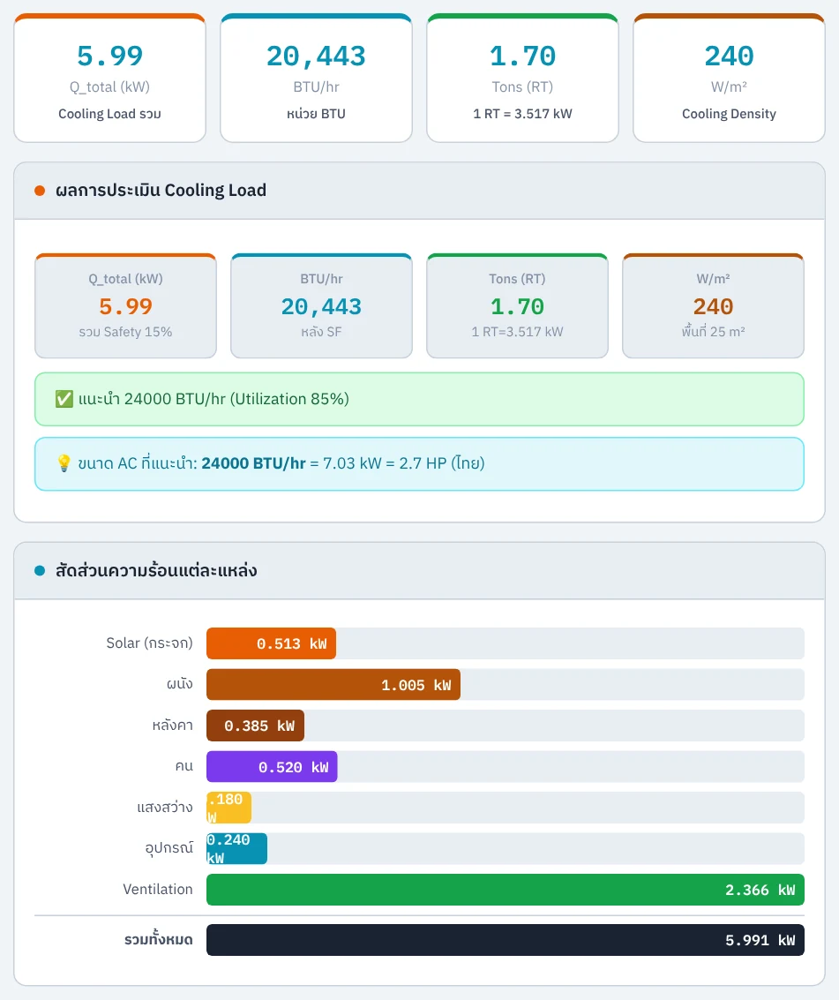
1
2
3
4
5
1
ภาระความเย็นรวม 5.58 kW (รวมค่าเผื่อแล้ว)
2
19,037 BTU/h = 1.59 ตันความเย็น
3
223 W ต่อพื้นที่ 1 m² — ใช้เทียบกับห้องประเภทเดียวกัน
4
ขนาดแอร์มาตรฐานที่แนะนำ 24000 BTU/h (ใช้งาน 79 % ของขนาดเครื่อง)
5
แท่งแสดงว่าความร้อนมาจากไหน — แท่งยาวสุดคือจุดที่ควรแก้ก่อน
โรงงาน A: มากที่สุดคืออากาศบริสุทธิ์ 2.268 kW รองลงมาผนัง 0.975 kW และกระจก 0.513 kW
เครื่องที่ติดอยู่ 18,000 BTU/h น้อยกว่าภาระเล็กน้อย — แท็บ 5 จะบอกว่ายังรับได้หรือไม่
ลองเปลี่ยนค่า (What-if): ห้องเดิม ใช้งานต่างกัน
คู่มือใช้งาน · เครื่องปรับอากาศแบบแยกส่วน (Split Type AC Performance Calculator) · ระดับ Free
22 / 31
| กรณี | ภาระ (BTU/h) | W/m² | ขนาดเครื่อง ÷ ภาระ | ผลในแท็บ 5 |
|---|---|---|---|---|
| โรงงาน A: 4 คน · ตั้ง 25 °C | 19,037 | 223 | 0.95 | ✅ ขนาดเหมาะสม |
| ประชุมเต็มห้อง 10 คน | 20,803 | 244 | 0.87 | ❌ Under-sized — ระบบทำงานหนักเกิน |
| ตั้งอุณหภูมิต่ำลงเป็น 23 °C | 20,258 | 237 | 0.89 | ❌ Under-sized — ระบบทำงานหนักเกิน |
ทำเอง: แก้ค่า → กด คำนวณ Cooling Load → ดูแท็บ 5 → แก้กลับเป็นค่าเดิม
แอร์ที่ "ไม่เย็น" อาจไม่ได้เสีย — แต่ห้องถูกใช้เกินกว่าที่เครื่องรับได้
ตั้งอุณหภูมิต่ำลง 2 °C ภาระเพิ่มทันที — ปรับตั้ง 25 °C คือมาตรการที่ไม่ต้องลงทุน
ช่องว่างกับศูนย์ต่างกัน
คู่มือใช้งาน · เครื่องปรับอากาศแบบแยกส่วน (Split Type AC Performance Calculator) · ระดับ Free
23 / 31
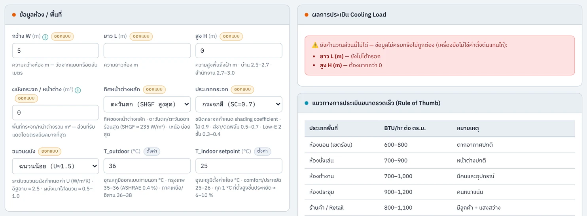
1
2
3
4
1
ยาว L เว้นว่าง → "ยังไม่ได้กรอก"
2
สูง H ใส่ 0 → "ต้องมากกว่า 0" (ห้องสูง 0 m ไม่มีจริง)
3
พื้นที่กระจก 0 m² ใช้ได้ = ห้องไม่มีกระจกโดนแดด ไม่ถูกเตือน
4
กล่องแดงบอกชื่อช่องที่ต้องแก้ · ส่วนนี้ไม่คำนวณ
แก้เฉพาะกระจกเป็น 0: เครื่องมือใช้ 0 จริง → ภาระ 17,329 BTU/h (เคสโรงงาน A กระจก 4 m²: 19,037 BTU/h)
ช่องว่างไม่ถูกแทนด้วยค่าตั้งต้น · แท็บ 5 ไม่แสดงแถวขนาดเครื่องจนกว่าแท็บ 4 คำนวณได้
กรอก L = 5 · H = 2.7 · กระจก 4 กลับคืนแล้วกดคำนวณ: ได้ 19,037 BTU/h · อัตราส่วน 0.95 เท่าเคสเดิม
ทุกแท็บ: อุณหภูมิ · คน · ไฟ · อุปกรณ์ ใส่ 0 ได้ · ขนาดเครื่อง · กำลังไฟ · ขนาดห้อง · ปริมาณลม ต้องมากกว่า 0
⚠️ ระวัง
ไม่รู้ค่า ให้หาค่าจริงก่อน อย่าใส่ 0 แทน — 0 ถูกนำไปคำนวณจริง
ตารางประมาณขนาดแอร์แบบเร็ว
คู่มือใช้งาน · เครื่องปรับอากาศแบบแยกส่วน (Split Type AC Performance Calculator) · ระดับ Free
24 / 31
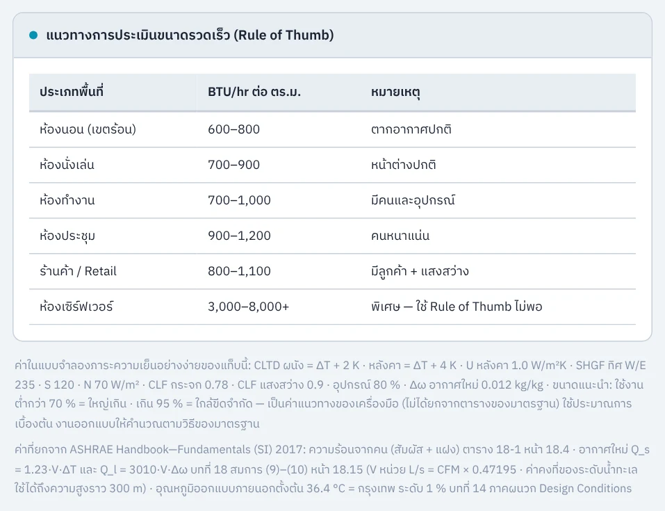
1
1
บรรทัดค่าในแบบจำลองภาระของแท็บ 4 (CLTD · SHGF · CLF ฯลฯ) = ค่าแนวทางของเครื่องมือ ใช้ประมาณการเบื้องต้น
ใช้ตรวจคร่าว ๆ ว่าผลจากแท็บ 4 สมเหตุสมผลไหม: BTU/h ต่อพื้นที่ 1 m² ตามประเภทห้อง
โรงงาน A: นำ 19,037 BTU/h หารพื้นที่ 25 m² แล้วเทียบกับแถวของประเภทห้องในตาราง — ถ้าหลุดช่วงไปมากให้ทวนค่าที่กรอก
ห้องที่มีกระจกมาก คนมาก หรือมีอุปกรณ์ร้อน ต้องคำนวณเต็มในแท็บ 4 — ห้ามใช้ตารางนี้อย่างเดียว
💡 เคล็ดลับ
ตัวเลขในตารางเป็นแนวทางทั่วไปของเครื่องมือ ไม่ใช่ค่าตามมาตรฐาน — งานออกแบบจริงให้คำนวณตามวิธีของมาตรฐาน
ขั้นที่ 8
แท็บ 5: สรุปผลทั้งเครื่อง
คู่มือใช้งาน · เครื่องปรับอากาศแบบแยกส่วน (Split Type AC Performance Calculator) · ระดับ Free
25 / 31
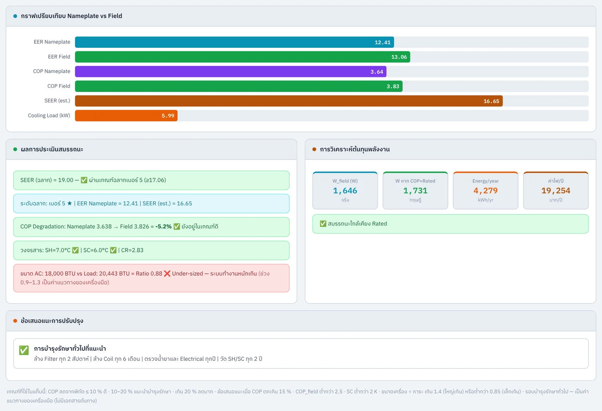
1
2
3
4
5
1
กราฟแท่งเทียบค่าป้ายกับค่าที่วัดได้ — EER · COP · SEER · ภาระห้อง
2
ผลประเมิน 4 ข้อ: ฉลาก · COP เทียบป้าย (-5.8 %) · วงจรน้ำยา (SH=7.0°C) · ขนาดเครื่อง (อัตราส่วน 0.95)
3
ค่าไฟ: ใช้จริง 1,646 W · ถ้า COP เท่าป้ายจะใช้ 1,742 W · 19,254 บาท/ปี
4
ข้อเสนอแนะ — เปลี่ยนตามอาการที่พบ
5
บรรทัดเกณฑ์ของแท็บ 5 (COP ลด ≤ 10 % ดี · 10–20 % บำรุงรักษา) = ค่าแนวทางของเครื่องมือ
COP เทียบป้ายติดลบ = วัดได้ดีกว่าป้าย · ค่าบวกมาก = ประสิทธิภาพตก ต้องบำรุงรักษา
ขนาดเครื่อง ÷ ภาระห้อง ช่วง 0.9–1.3 = เหมาะสม (ค่าแนวทางของเครื่องมือ)
ยังไม่ได้คำนวณแท็บ 2: ค่าไฟ/ปีเป็นค่าประมาณจากป้าย ใช้ค่าไฟฟ้าในช่องของแท็บ 2 — หน่วยใต้ตัวเลขบอกชั่วโมงและค่าไฟที่ใช้
💡 เคล็ดลับ
แท็บนี้ไม่มีช่องกรอก — ส่วนที่ยังว่าง แปลว่ายังไม่ได้กดคำนวณในแท็บ 1–4 หรือแท็บนั้นขึ้นกล่องแดง
บันทึกงาน และเปิดงานเดิม
คู่มือใช้งาน · เครื่องปรับอากาศแบบแยกส่วน (Split Type AC Performance Calculator) · ระดับ Free
26 / 31
1
2
3
4
1
ป้ายบอกมาตรฐานและเกณฑ์ที่เครื่องมืออ้างอิง
2
บันทึก JSON — เก็บค่าที่กรอกทั้งหมดเป็นไฟล์ 1 ไฟล์
3
โหลด JSON — เปิดไฟล์งานเดิมกลับมาทำต่อ
4
คืนค่าตั้งต้น — ล้างทุกช่องกลับเป็นตัวอย่าง (บันทึก JSON ก่อนกด)
แอร์ 1 เครื่อง = ไฟล์ JSON 1 ไฟล์ — ตั้งชื่อตามเครื่อง เช่น โรงงานA_AC-01_2569-11-16.json
เครื่องมือทำงานในเบราว์เซอร์ของคุณ — ปิดหน้าเว็บโดยไม่บันทึก ค่าที่กรอกอาจหาย
พิมพ์ผลด้วยเมนูพิมพ์ของเบราว์เซอร์ (Ctrl+P) แล้วเลือกบันทึกเป็น PDF
ตัวช่วยในหน้าจอ
คู่มือใช้งาน · เครื่องปรับอากาศแบบแยกส่วน (Split Type AC Performance Calculator) · ระดับ Free
27 / 31
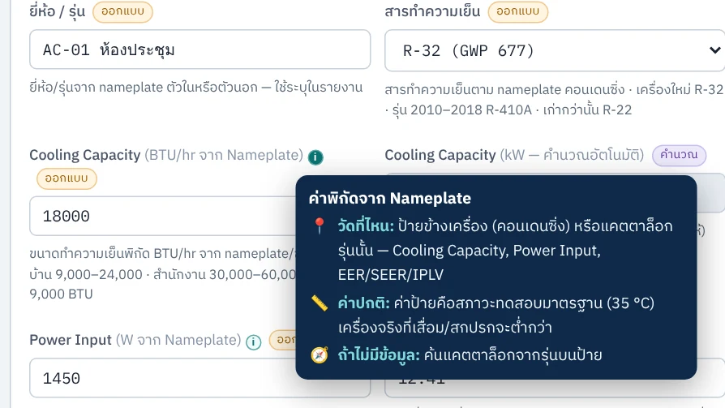
1
2
1
ปุ่ม ⓘ ข้างชื่อช่อง — กดเพื่อดูคำอธิบายของช่องนั้น
2
กล่องคำอธิบาย: ความหมาย · อ่านค่าจากไหน · ช่วงค่าปกติ
ท้ายแท็บ 1–4 มีแถบ 🧮 แสดงขั้นตอนการคำนวณ — กดเพื่อดูสูตรและตัวเลขที่แทนทีละบรรทัด ใช้ตรวจมือหรือแนบรายงาน
ข้อความสีเทาใต้ทุกช่องบอกหน่วย · เครื่องมือวัด · ช่วงค่าปกติ — ค่าที่กรอกอยู่นอกช่วงให้ตรวจหน่วยก่อน
ปุ่ม ↺ ล้างค่า ข้างปุ่มคำนวณ: แท็บ 1 คืนขนาดและกำลังไฟฟ้าเป็นค่าตัวอย่างแล้วคำนวณใหม่ · แท็บ 2–4 คำนวณใหม่จากค่าที่อยู่ในช่อง — เริ่มใหม่ทั้งเครื่องใช้ คืนค่าตั้งต้น
ข้อผิดพลาดที่พบบ่อย
คู่มือใช้งาน · เครื่องปรับอากาศแบบแยกส่วน (Split Type AC Performance Calculator) · ระดับ Free
28 / 31
✗ ใช้วัตต์บนป้ายแทนค่าที่วัด
✓ แท็บ 2 ต้องเป็นค่าจาก clamp meter / power meter ตอนเครื่องทำงานจริง
✗ วัดแต่กระเปาะแห้ง
✓ ต้องมีกระเปาะเปียกด้วยทั้งลมกลับและลมจ่าย ไม่อย่างนั้นความเย็นแฝงหาย
✗ ปริมาณลมจากแคตตาล็อก
✓ แผ่นกรองตัน ลมจริงน้อยกว่าแคตตาล็อกมาก — วัดความเร็วลมจริง
✗ วัดตอนเพิ่งเปิดเครื่อง
✓ รอให้เครื่องทำงานต่อเนื่อง 10–15 นาที ก่อนจดค่า
✗ วัดไฟกับวัดลมคนละเวลา
✓ กระแสและอุณหภูมิลมต้องจดช่วงเวลาเดียวกัน โดยเฉพาะ Inverter
✗ เลือกสารทำความเย็นผิด
✓ R32 กับ R410A ความดันต่างกัน — SH/SC จะผิดทั้งหมด
✗ ไม่กรอก SEER ที่ฉลาก
✓ เครื่องมือจะขึ้น "ยังเทียบไม่ได้" — SEER (est.) ใช้แทนไม่ได้
✗ เปิดแท็บ 5 ก่อนคำนวณ
✓ ต้องกดคำนวณแท็บ 1–4 ก่อน แท็บ 5 จึงมีข้อมูลสรุป
แบบฝึกหัด: โรงงาน B แอร์ห้องสำนักงาน 12,000 BTU/h
คู่มือใช้งาน · เครื่องปรับอากาศแบบแยกส่วน (Split Type AC Performance Calculator) · ระดับ Free
29 / 31
| ข้อมูล | ค่า |
|---|---|
| ป้าย: ขนาด · กำลังไฟฟ้า · EER | 12,000 BTU/h · 1,000 W · 12.0 |
| ไฟฟ้าที่วัด: แรงดัน · กระแส · PF | 220 V · 5.6 A · 0.90 |
| ลมกลับ DB / WB | 26.0 / 18.5 °C |
| ลมจ่าย DB / WB | 15.0 / 13.5 °C |
| ปริมาณลม | 380 CFM |
| ค่าอื่นทั้งหมด | ใช้ค่าตั้งต้นของเครื่องมือ |
คำถาม — กรอกแล้วตอบ
1
กำลังไฟฟ้าจริง = ______ W
2
ความเย็นที่ทำได้จริง = ______ BTU/h
3
COP ภาคสนาม = ______ สถานะ ______
4
เทียบกับ COP ตามป้ายแล้วเป็นอย่างไร ควรทำอะไรก่อน?
💡 เคล็ดลับ
กด "คืนค่าตั้งต้น" ก่อนเริ่ม → แท็บ 1 กรอกป้ายแล้วคำนวณ → แท็บ 2 กรอกค่าที่วัดแล้วคำนวณ
เฉลยแบบฝึกหัด โรงงาน B
คู่มือใช้งาน · เครื่องปรับอากาศแบบแยกส่วน (Split Type AC Performance Calculator) · ระดับ Free
30 / 31
1) กำลังไฟฟ้าจริง = 220 × 5.6 × 0.90 = 1,109 W (ป้าย 1,000 W)
2) ความเย็นที่ทำได้จริง = 10,171 BTU/h (2.98 kW) — ต่ำกว่าป้าย 12,000
3) COP ภาคสนาม = 2.688 → ❌ ต่ำ · EER 9.17
4) COP ตามป้าย 3.517 → วัดได้ 2.688: กินไฟมากขึ้นแต่เย็นน้อยลง — เริ่มที่ล้างแผ่นกรองและคอยล์ วัดปริมาณลมใหม่ แล้วค่อยตรวจน้ำยา (แท็บ 3)
✓ ผ่าน
ได้ตัวเลขตรงกัน = ใช้เครื่องมือเป็นแล้ว · ส่วนต่างอุณหภูมิลม 11.0 °C ยังปกติ จึงสงสัยปริมาณลมก่อนน้ำยา
สรุป 1 หน้า (พิมพ์ติดไว้ข้างคอมพิวเตอร์)
คู่มือใช้งาน · เครื่องปรับอากาศแบบแยกส่วน (Split Type AC Performance Calculator) · ระดับ Free
31 / 31
1
แท็บ 1: ป้ายเครื่อง
BTU/h · W · EER · SEER ที่ฉลาก → กดคำนวณ
2
แท็บ 2: วัดไฟฟ้า
V · A · PF (หรือ W จาก power meter)
3
แท็บ 2: วัดลม
ลมกลับ DB/WB · ลมจ่าย DB/WB · CFM → กดคำนวณ
4
อ่านผลภาคสนาม
BTU/h จริง · COP · ส่วนต่างอุณหภูมิลม
5
แท็บ 3: น้ำยา
อุณหภูมิอิ่มตัว 2 ด้าน · ท่อดูด · ท่อน้ำยาเหลว → SH / SC
6
แท็บ 4: ห้อง
ขนาด · กระจก · คน · ไฟ · อากาศบริสุทธิ์ → BTU ที่ต้องใช้
7
แท็บ 5: สรุป
COP เทียบป้าย · ขนาดเครื่อง · ค่าไฟ · ข้อเสนอแนะ
8
บันทึก JSON
1 เครื่อง = 1 ไฟล์
อ่านผลแล้วตรวจ
☐
ขึ้นกล่องแดง ⚠️ → กรอกช่องที่บอกให้ครบ (0 = ค่า 0 จริง)
☐
COP ตกจากป้ายมาก → ล้างกรอง/คอยล์ก่อน
☐
SH สูง + SC ต่ำ → สงสัยน้ำยาขาด
☐
ขนาดเครื่อง ÷ ภาระ < 0.9 → เครื่องเล็กไป
☐
ยังเทียบฉลากไม่ได้ → กรอก SEER ที่ฉลาก
อ.หนึ่ง กลับทวี / Aj. Nueng Klubtavee
tripleeenergytools.com
tripleeenergytools.com